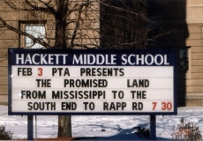
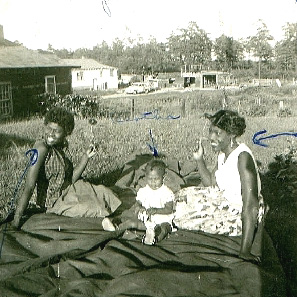

- An African American Odyssey -
February 3, 2000
Program Summary
| On Thursday evening, more than 200 people
braved a cold and snowy night to take part in a
delightful program at beautiful old Hackett Middle School on Delaware
Avenue.
The evening began with the reading of a proclamtion from the Albany County Legislature designating that day, February 3, 2000, as "The Promised Land Day" in Albany County. Host Stefan Bielinski began by thanking county legislature president Frank J. Commisso for the eloquent recognition of "The Promised Land" story and of its importance in Albany's history and then presented the proclamation to Rapp Road chairperson Emma Woodard Dickson. Bielinski presented an overview of the "Great Migration" of the descendants of slaves from the rural South to Northern cities like Albany during the first part of the 20th century, described Rapp Road today - its location, boundaries, and proximity to other local landmarks, and then introduced Emma Dickson. As the audience settled in, the program unfolded with the speaker addressing Bielinski's queries covering topics including Shubuta, Mississippi, the exodus and trips to Albany, the South End, the Church of God in Christ, settling Rapp Road, life there from the 1940s to the present, and her hopes for the future. Frequent digressions from the planned "march of time" provided fascinating insights into the rich social fabric of the Promised Land story. Then, the large and enthusiastic audience - particularly those with personal ties to Rapp Road, asked additional questions, offered corroborating and new information, and raised a number of issues that were considered and discussed. Unlike most history event audiences, this gathering included many children who came with parents and grandparents - Rapp Road descendants and Hackett PTA members alike! Also well represented were the members of the co-sponsoring institutions including the Friends of Schuyler Mansion, Albany Institute of History and Art, and Ten Broeck Mansion (Albany County Historical Association) - all of which helped promote the event through their regular and special avenues. A number of neighborhood and community organizations created links to the electronic program flyer on their websites. Judging from the audience and the number of phone calls received, the feature article in the Albany Times Union provided widespread visibility. Additionally, several local organizations included promotional flyers in their regular mailings. However, we believe that the success of the event was due largely to an extensive personal promotional campaign on the part of individual members of the sponsoring groups. It is fitting that a story that has been passed down chiefly in oral tradition relied on good old "word of mouth" to be its messenger in the year 2000! Staff at the Colonial Albany Social History Project took the lead in organizing this particular event as part of its ongoing Black History Month committment, as an example of how to bring Albany's history organizations together in a cooperative and successful community-based program, and in order to begin to shed light on a neglected aspect of Albany's history. Images uncovered and digitized for the program can become the core of a Promised Land archive and a time line created to help organize program discussion can only be expanded and improved. Although well beyond its defined parameters of concern,The Colonial Albany Project will continue to accept information and copies of materials relating to the Promised Land story. Soon, this website will include a feature on the western section of early Albany - that is the mile-wide expanse of land from Lark Street to Albany's original western boundary - sixteen miles northwest of the Hudson River. During the 18th century, a few people lived in that part of the city along the legendary "King's Highway" to Schenectady. |